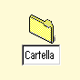

Come valore assunto, se la cartella Š aperta XFolder rende editabile il titolo del
nuovo oggetto, come se vi si fosse fatto sopra clic premendo anche il tasto Alt:

Invece tenendo premuto il tasto Maius mentre si seleziona la voce di menu desiderata, XFolder aprir… automaticamente il blocco impostazioni dell'oggetto appena creato.
E' possibile cambiare questo comportamento dalle pagine
"Menu contestuali" nel nuovo oggetto
"Workplace Shell".